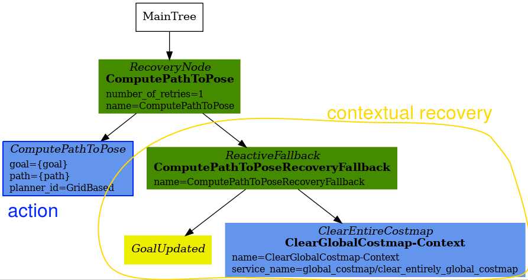

详细的行为树遍历
概述
本文档作为 Nav2 中使用的主要行为树（BT）的参考指南。
在 nav2_bt_navigator/behavior_trees 中提供了许多示例行为树，但有时需要根据机器人的应用重新配置它们。下面的文档将详细介绍当前主要的默认行为树 navigate_to_pose_w_replanning_and_recovery.xml。
前提条件
在继续本指南之前，请熟悉行为树的概念。
请阅读 导航概念 中的简要说明。
在 BehaviorTree CPP V3 网站上阅读一般教程和指南（非特定于Nav2）。特别是 BehaviorTree CPP V3 网站上的"学习基础知识"部分解释了此指南将要构建的基本通用节点。
熟悉定制的`Nav2特定的行为树节点 <nav2_specific_nodes.html>`_
导航子树
现在我们已经讨论了“导航”子树和“恢复”子树之间的控制流程，让我们专注于导航子树。

此子树的XML如下所示：
<PipelineSequence name="NavigateWithReplanning">
<RateController hz="1.0">
<RecoveryNode number_of_retries="1" name="ComputePathToPose">
<ComputePathToPose goal="{goal}" path="{path}" planner_id="GridBased"/>
<ReactiveFallback name="ComputePathToPoseRecoveryFallback">
<GoalUpdated/>
<ClearEntireCostmap name="ClearGlobalCostmap-Context" service_name="global_costmap/clear_entirely_global_costmap"/>
</ReactiveFallback>
</RecoveryNode>
</RateController>
<RecoveryNode number_of_retries="1" name="FollowPath">
<FollowPath path="{path}" controller_id="FollowPath"/>
<ReactiveFallback name="FollowPathRecoveryFallback">
<GoalUpdated/>
<ClearEntireCostmap name="ClearLocalCostmap-Context" service_name="local_costmap/clear_entirely_local_costmap"/>
</ReactiveFallback>
</RecoveryNode>
</PipelineSequence>
这个子树有两个主要的动作“ComputePathToPose”和“FollowPath”。如果其中任何一个动作失败，它们将尝试在上下文中清除失败。树的关键部分可以用一个父节点和两个子节点来表示，就像这样：

父“PipelineSequence”节点允许选中“ComputePathToPose”，一旦成功，就选中“FollowPath”。在“FollowPath”子树被选中的同时，“ComputePathToPose”子树也将被选中。这允许在机器人移动时重新计算路径。
“ComputePathToPose”和“FollowPath”都遵循相同的一般结构。
执行动作
如果动作失败，尝试在上下文中恢复
下面是``ComputePathToPose``子树：

父节点“RecoveryNode”控制着动作和上下文恢复子树之间的流程。对于“ComputePathToPose”和“FollowPath”的上下文恢复，涉及检查目标是否已更新，并清除相关的代价地图。
如果您的应用程序可以容忍更多次上下文恢复尝试，然后再进行系统级恢复，请考虑更改父级``RecoveryNode``控制节点中的``number_of_retries``参数。
“ComputePathToPose”和“FollowPath”的BT子树唯一的区别如下所述：
- 子树中的动作节点：
“ComputePathToPose”子树围绕“ComputePathToPose”动作展开。
``FollowPath``子树围绕着``FollowPath``动作。
- 装饰``ComputePathToPose``子树的``RateController``
RateController``修饰``ComputePathToPose``子树以保持以指定频率进行规划。此BT的默认频率为1 Hz。这样做是为了防止BT以树更新频率（100Hz）向规划服务器发送过多的无用请求。根据应用程序和计算路径的计算成本，考虑将此频率更改为更高或更低的值。还有其他修饰器可以替代``RateController。如果适用，考虑使用``SpeedController``或``DistanceController``修饰器。
恢复子树
``Recovery``子树是Nav2默认的``navigate_to_pose_w_replanning_and_recovery.xml``树的第二个重要的“半部分”。简而言之，当``Navigation``子树返回``FAILURE``时，将触发此子树，并在系统级别控制恢复过程（在``Navigation``子树的上下文恢复不足的情况下）。

XML代码片段如下：
<ReactiveFallback name="RecoveryFallback">
<GoalUpdated/>
<RoundRobin name="RecoveryActions">
<Sequence name="ClearingActions">
<ClearEntireCostmap name="ClearLocalCostmap-Subtree" service_name="local_costmap/clear_entirely_local_costmap"/>
<ClearEntireCostmap name="ClearGlobalCostmap-Subtree" service_name="global_costmap/clear_entirely_global_costmap"/>
</Sequence>
<Spin spin_dist="1.57"/>
<Wait wait_duration="5"/>
<BackUp backup_dist="0.15" backup_speed="0.025"/>
</RoundRobin>
</ReactiveFallback>
最顶层的父节点``ReactiveFallback``控制系统范围内其他恢复过程的流程，并异步检查是否接收到新目标。如果在任何时候目标被更新，此子树将停止所有子节点并返回``SUCCESS``。这允许快速响应新目标并中止当前正在执行的恢复过程。这应该对``Navigation``子树的上下文恢复部分很熟悉。这是处理“除非发生'此条件'，否则执行操作A”的常见行为树模式。
这些条件节点非常强大，通常与“ReactiveFallback”配对使用。很容易想象将整个“navigate_to_pose_w_replanning_and_recovery”树包装在带有“isBatteryLow”条件的“ReactiveFallback”中——这意味着“navigate_to_pose_w_replanning_and_recovery”树将执行，**除非**电池电量变低（然后执行完全不同的子树以进行充电）。
如果目标从未更新，行为树将继续执行``RoundRobin``节点。在行为树中，系统级别的默认四个恢复过程是：
在父级“RoundRobin”的四个子节点中的任何一个成功后，机器人将尝试在“Navigation”子树中重新导航。如果此次重新导航不成功，则将启动下一个“RoundRobin”的子节点。
例如，假设机器人卡住了，Navigation``子树返回``FAILURE：（为了举例，假设目标从未更新）。
尝试执行“Recovery”子树中的代价地图清除序列，并返回“成功”。机器人现在再次转到“Navigation”子树。
假设清除两个代价地图仍然不足，
Navigation``子树再次返回``FAILURE。机器人现在触发``Recovery``子树。在“Recovery”子树中，将执行“Spin”动作。如果此动作返回“成功”，则机器人将返回主要的“Navigation”子树。**但是**假设“Spin”动作返回“失败”。在这种情况下，树将**保持**在“Recovery”子树中。
假设下一个动作，
Wait``返回``SUCCESS。然后机器人将继续执行``Navigation``子树。假设
Navigation子树返回FAILURE（清除代价图、尝试旋转和等待仍然无法恢复系统）。机器人将进入Recovery子树并尝试BackUp动作。假设机器人尝试了BackUp动作并成功完成了该动作。BackUp动作节点返回SUCCESS，现在我们再次进入 Navigation 子树。在这个假设的场景中，假设``BackUp``动作使得机器人能够在``Navigation``子树中成功导航，并且机器人到达了目标。在这种情况下，整个BT仍然返回``SUCCESS``。
如果 BackUp 动作不足以使机器人解困，上述逻辑将无限循环，直到超过``Navigate`` 子树和 Recovery 子树的父节点中的 number_of_retries，或者如果 Recovery 子树中的所有系统级恢复都返回 ``FAILURE``（这种情况不太可能，很可能是其他系统故障）。